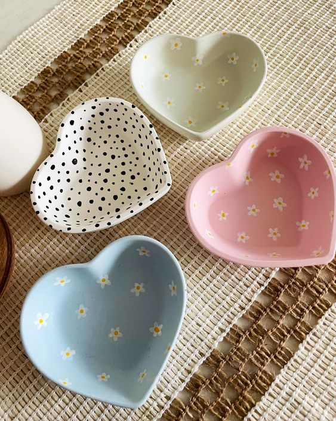
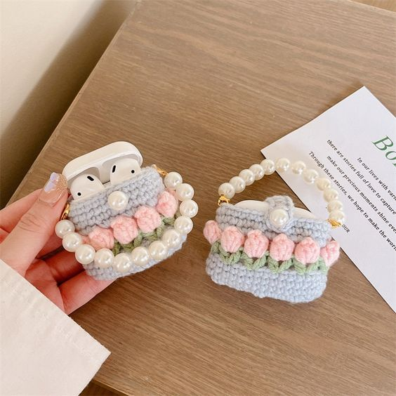
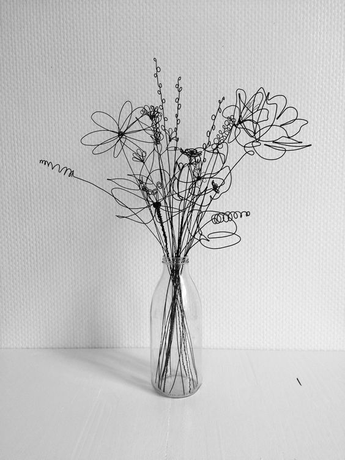

Дома
За нас
Производи
Уметници
Нарачки
СИТЕ ПРОЗИВОДИ
УМЕТНИЧКИ СЛИКИ
СКУЛПТУРИ
РАЧНО ИЗРАБОТЕНИ ПРЕДМЕТИ
УНИКАТЕН НАКИТ
ДЕКОРАЦИИ
ПРЕДМЕТИ ИЗРАБОТЕНИ ОД ДРВО

ФИЛЏАНИ
Цена: 799 МКД
Статус: Достапно

УКРАСНИ ЧИНИИ
Цена: 499 МКД
Статус: Достапно

ТАШНИЧКА ЗА СЛУШАЛКИ
Цена: 399 МКД
Статус: Достапно

УКРАСНИ КУТИИ ЗА ПОКЛОН
Цена: 199 МКД
Статус: Достапно

ДЕКОРАТИВНО ШИШЕ ЗА ВИНО
Цена: 599 МКД
Статус: Достапно

БУКЕТ ДЕКОРАТИВНИ ЦВЕТОВИ
Цена: 699 МКД
Статус: Достапно
ФИЛЏАНИ
ОПИС
Филџани изработени од глина кои се декорирани со бела боја и црвени мали срциња. Наменети за топли и ладни напитоци, соодветни за украс на секоја трпеза, за прво утринско кафе или чај.ИЗРАБОТИЛ
Миа МилковаЦЕНА
799 МКДСТАТУС
Достапно
-
+
УКРАСНИ ЧИНИИ
ОПИС
Еколошки рачно насликани чинии со прилагодени бои. Едноставни, рачно изработени со љубов. Може да се користат за чување на накит, пример прстени обетки и слично, може да се користат за посложување на маса или како декорација на маса.ИЗРАБОТИЛ
Миа МилковаЦЕНА
499 МКДСТАТУС
Достапно
-
+
ТАШНИЧКА ЗА СЛУШАЛКИ
ОПИС
Оваа футрола за слушалки со цветови е рачна изработка и претставува мини ташничка за безжични слушалки. Покрај тоа што изгледа убаво и слатко, ги штити слушаките доколку паднат да не се огребат, скршат или слично. Имаат заштитна улога и исто така има отвор на дното каде што слушалките се полнат.ИЗРАБОТИЛ
Тара ЧасиќЦЕНА
399 МКДСТАТУС
Достапно
-
+
УКРАСНИ КУТИИ ЗА ПОКЛОН
ОПИС
Украсни кутии за поклон направени од хартија и украсни цветови. Може да се користат за некој помал поклон како на пример накит или пари.ИЗРАБОТИЛ
Миа МилковаЦЕНА
199 МКДСТАТУС
Достапно
-
+
ДЕКОРАТИВНО ШИШЕ ЗА ВИНО
ОПИС
Овие шишиња за вино се изработени прецизно и внимателно специјално дизајнирани за елегантен амбиент во вашиот дом. Направени се од издржливи материјали, идеални за љубителите на модерен и класичен стил.ИЗРАБОТИЛ
Тара ЧасиќЦЕНА
599 МКДСТАТУС
Достапно
-
+
БУКЕТ ДЕКОРАТИВНИ ЦВЕТОВИ
ОПИС
Букет од цветови изработени од црна метална жица. Изработени се цветови во различни форми кои естетки изгледаат модерно и елегантно во секоја просторија.ИЗРАБОТИЛ
Тара ЧасиќЦЕНА
699 МКДСТАТУС
Достапно
-
+